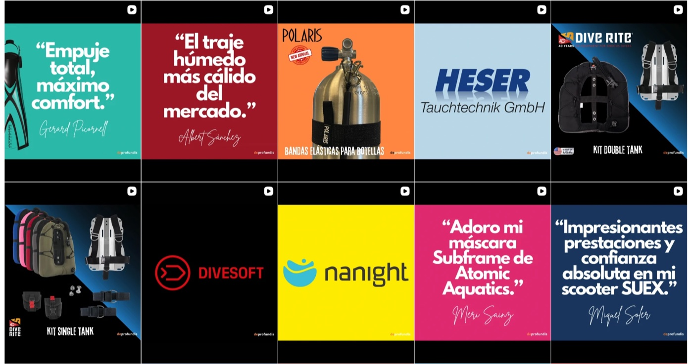
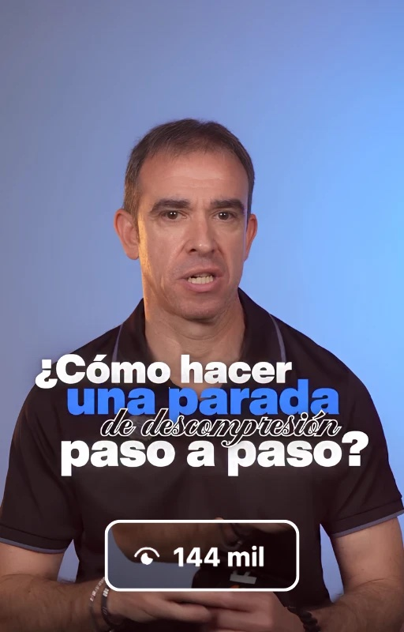
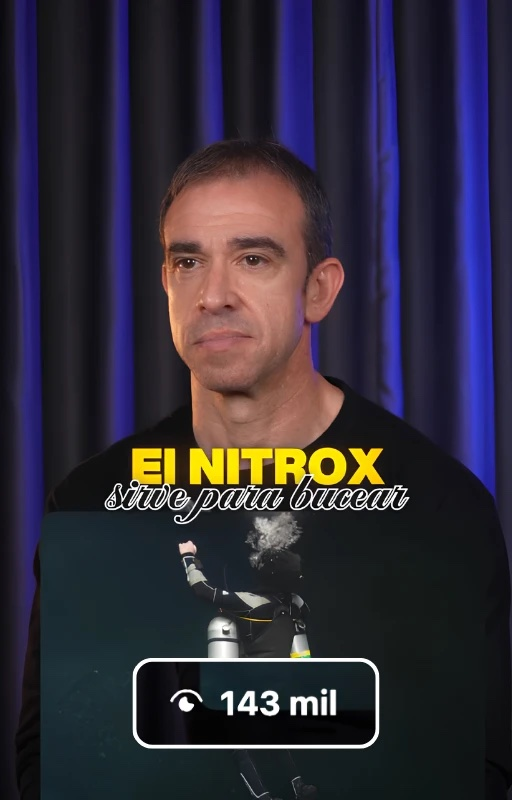
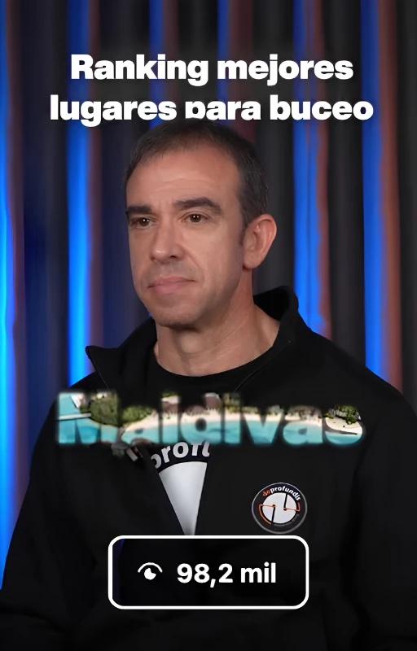
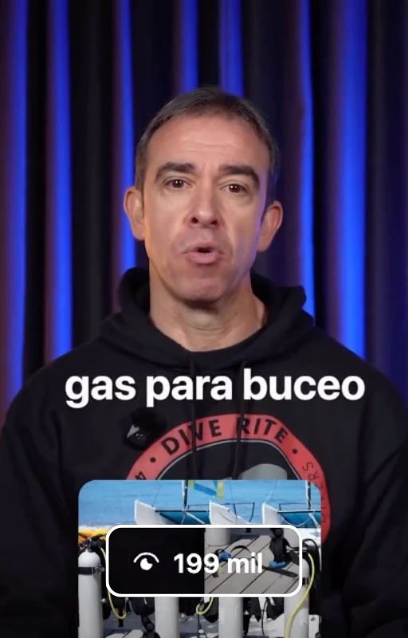
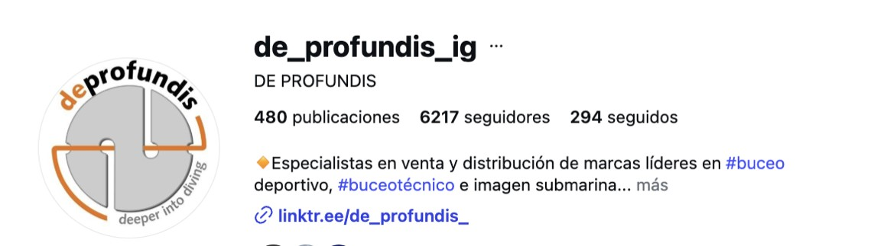

Cuando un negocio pertenece a un sector muy especializado, es habitual pensar que las redes sociales no son para él. El caso de De Profundis demuestra lo contrario. En menos de dos años, su perfil de Instagram ha pasado de ser un escaparate con poca actividad a convertirse en una fuente diaria de clientes y en un referente digital del buceo técnico en España.
En este caso de éxito en Instagram explicamos cómo era la situación de partida, qué estrategia aplicamos y qué resultados ha obtenido desde que empezamos a trabajar juntos en enero de 2025.
| Antes de Mediatic | Con Mediatic | |
|---|---|---|
| Seguidores en Instagram | Menos de 1.000 | Más de 6.200, muy cualificados |
| Interacción por publicación | Entre 5 y 12 «me gusta» | Reels de 80.000, 90.000, 100.000 y más de 200.000 visualizaciones |
| Tipo de contenido | Fotos estáticas de producto | Vídeos hablados a cámara con David como protagonista |
| Dedicación del cliente | Él y su equipo, de forma continua | Menos de 6 horas cada tres meses |
| Papel de las redes | Escaparate | Motor de captación de clientes |
El cliente: David de las Heras y De Profundis
De Profundis es un negocio especializado en buceo técnico. Combina una tienda de material técnico de buceo con formaciones impartidas por su CEO, David de las Heras.
David acumula más de 30 años de experiencia en el mundo del buceo, con especial dedicación al buceo técnico y de cuevas, y es director de la oficina regional del sur de Europa de SDI/TDI, según su perfil en la web de TDI/SDI. Un conocimiento enorme que, hasta 2025, apenas se reflejaba en sus redes sociales.
El punto de partida: unas redes sociales sin retorno
Antes de trabajar con nosotros, el perfil de De Profundis en Instagram tenía menos de 1.000 seguidores. Las publicaciones recibían entre 5 y 12 «me gusta», y el contenido se limitaba a fotografías de material con explicaciones sobre sus características.
El problema no era la falta de esfuerzo. David y su equipo dedicaban tiempo de forma constante a gestionar las redes, un tiempo que dejaban de invertir en otras áreas del negocio. Sin embargo, ese trabajo no se traducía en resultados. Las redes sociales funcionaban como un escaparate, pero no como un canal de venta.

La estrategia: poner a David delante de la cámara
El primer paso fue cambiar por completo el enfoque del contenido. Las fotos de producto describían el material, pero no despertaban el interés de los posibles clientes. Por eso apostamos por vídeos hablados a cámara con David como protagonista.
En estos vídeos, David comparte lo que mejor conoce:
- Particularidades del sector que solo un experto puede explicar con claridad.
- Diferencias entre productos, para ayudar a elegir el material adecuado.
- Beneficios y usos del material que vende, explicados desde la experiencia.
Este enfoque cumple dos objetivos a la vez. Da a conocer el catálogo de la tienda y, al mismo tiempo, posiciona a David como la persona de referencia a la que acudir. Es un ejemplo claro de por qué el contenido de nicho vende más que el contenido viral, como explicamos en nuestro artículo sobre los mitos de Instagram.
Un proceso del que nos encargamos por completo
Uno de los aspectos que más valora David es el poco tiempo que le exige. Grabamos el contenido una vez cada tres meses y, en una sola mañana, queda listo el material de todo el trimestre.
El equipo de Mediatic se encarga de todo el proceso: estrategia, ideas, guiones, grabación, edición, publicación y análisis del rendimiento del contenido.
La participación de David se limita a tres momentos: revisar los guiones, acudir el día de la grabación y dar el visto bueno al material editado. En total, menos de 6 horas cada tres meses.
Los resultados: un referente del buceo técnico
El cambio ha sido notable. Hoy el perfil de De Profundis supera los 6.200 seguidores, una cifra muy relevante en un sector tan específico. No se trata de un crecimiento masivo, sino de un crecimiento constante y muy cualificado: personas interesadas en el buceo técnico y con intención real de formarse o comprar material.
El alcance de sus vídeos también refleja este cambio. Todos los resultados se han conseguido de forma orgánica, sin inversión en publicidad:
- Un reel que supera las 200.000 visualizaciones.
- Varios vídeos en torno a las 100.000 visualizaciones.
- Otros que superan las 80.000 y 90.000 visualizaciones.




Analizamos esta evolución en detalle en nuestro vídeo sobre el crecimiento de De Profundis.
Clientes que preguntan por «David, el de los vídeos»
El resultado más importante no se mide en visualizaciones, sino en clientes. Hoy De Profundis recibe cada día consultas a través de las redes sociales, llamadas pidiendo información y visitas de personas interesadas en sus productos y formaciones.
Incluso hay clientes de otras partes de España que se han desplazado hasta sus instalaciones con una petición muy concreta: que les atienda David, el de los vídeos. Es la mejor prueba de que su contenido no solo genera alcance, sino confianza.

David lo cuenta en primera persona
En esta entrevista, David explica cómo ha sido trabajar con Mediatic, cómo funciona el servicio y qué ventajas le ha aportado a su negocio. También relata la experiencia de los clientes que llegan a su tienda gracias a los vídeos.
 ▶
▶Claves de este caso de éxito
- El experto como protagonista. Que David aparezca en los vídeos genera una confianza que ninguna foto de producto puede transmitir.
- Contenido de nicho. Hablar a un público muy concreto atrae seguidores con intención real de compra.
- Mínima dedicación del cliente. Una mañana de grabación cada tres meses es suficiente para mantener una presencia constante.
- Resultados orgánicos. Todo el crecimiento se ha logrado sin inversión publicitaria.
Conclusión
Este caso de éxito en Instagram demuestra que un sector especializado no es un obstáculo para crecer en Instagram, sino una ventaja si se trabaja con la estrategia adecuada. Con vídeos que ponen en valor el conocimiento de David, su perfil ha pasado de ser un escaparate a convertirse en un motor de captación de clientes, con una dedicación mínima por su parte.
Si quieres conseguir resultados similares en tu negocio, conoce nuestros servicios de contenido para empresas o contacta con Mediatic.
Preguntas frecuentes
¿Funciona Instagram para un negocio de un nicho muy específico?
Sí, Instagram funciona muy bien para negocios de nicho. El crecimiento suele ser más lento que en sectores masivos, pero el público que se atrae está mucho más cualificado. En el caso de De Profundis, más de 6.200 seguidores interesados en el buceo técnico generan consultas y clientes cada día.
¿Cuánto tiempo tiene que dedicar el cliente a su contenido con Mediatic?
En el caso de De Profundis, menos de 6 horas cada tres meses. Mediatic se encarga de la estrategia, las ideas, los guiones, la grabación, la edición, la publicación y el análisis. El cliente solo revisa los guiones, acude a la grabación y aprueba el material editado.
¿Qué tipo de vídeos funcionan para una tienda especializada?
Los vídeos hablados a cámara en los que el experto explica su sector suelen funcionar especialmente bien. Comparar productos, explicar sus beneficios y resolver dudas habituales aporta valor al público y, al mismo tiempo, da a conocer el catálogo de forma natural.
¿Hace falta invertir en publicidad para conseguir clientes por Instagram?
No es imprescindible. Todos los resultados de De Profundis se han conseguido de forma orgánica, con reels que superan las 200.000 visualizaciones. La clave está en una estrategia de contenido sólida y constante, pensada para el público que realmente puede convertirse en cliente.